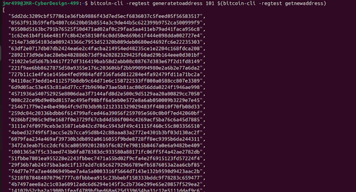

3. Right click on Linux (tgz) and copy link address.
4. Then on your terminal type and enter :
~$ sudo wget 'copied link address for download'
5. Unpack the downloaded Bitcoin Core file
~$ sudo tar -zxvf bitcoin-'version'-x86_64-linux-gnu.tar.gz
6. View the new directory name ~$ls
7. Navigate to the Binary Folder
~$ cd bitcoin-/bin
8. To start Bitcoin core in regtest mode, run this command:
~$ ./bitcoind -regtest -daemon
9. To make things easier every time we run Bitcoin core, we’ll setup a configuration file. First stop bitcoin core using:
~$ ./bitcoin-cli -regtest stop
10. Create the configuration file bitcoin.conf in ~/.bitcoin/
11. Make the configuration file with:
~$ nano ~/.bitcoin/bitcoin.conf
The bitcoin.conf file configures how your Bitcoin Core node operates.
It defines network settings, how Bitcoin Core listens for incoming RPC connections,
and other parameters needed for smooth interaction with tools like the Lightning Network.
The bitcoin.conf configuration determines how Bitcoin Core listens for incoming RPC connections.
Server: Enables RPC control.
Daemon: Runs Bitcoin Core in the background.
Txindex: Indexes transactions for faster lookups.
Prune=n: Keeps the full blockchain for compatibility with Lightning, node will keep all historical block data.
rpcuser and rpcpassword: These fields define credentials for accessing Bitcoin Core over RPC. They allow external tools (e.g., bitcoin-cli or Lightning Network nodes) to communicate with the Bitcoin daemon securely.
RPC Port: This is the listening port for RPC requests. RPC allows external services to control and query Bitcoin Core, such as retrieving blockchain data or sending transactions.
Multiple Bitcoin nodes need unique RPC ports to avoid conflicts.
If multiple Bitcoin nodes are running on the same machine, they need to use different RPC ports to avoid conflicts. This port must match what the client (e.g., Lightning node) expects to connect properly
rpcbind: Defines which network interface the node should bind for RPC communication. In this case, it's commented out, which defaults it to bind to all available interfaces.
rpcallowip: Whitelists IP ranges that can access the Bitcoin node’s RPC server. You’ve allowed local IPs (like 127.0.0.1) and private IP ranges (10.0.0.0/8, 192.0.0.0/8). This is important for security, preventing unauthorized access from external networks.
ZeroMQ Ports: These settings enable ZeroMQ (ZMQ) integration, which allows external programs to subscribe to real-time updates from the Bitcoin Core node (e.g., new blocks or transactions). This is useful in high-frequency trading or for monitoring the blockchain in real-time.
Fallback Fee: This will ensure transactions aren’t blocked when fee estimation fails (common in regtest). This prevents issues when sending funds to Lightning addresses.
Run the command followed by a the Username and Password you’ll want to configure bitcoin.conf:
~/Downloads$ ./rpcauth.py 'username' 'password'
For example:
~/Downloads$ ./rpcauth.py 'CYBER499' 'CYBER499'
Copy and paste the generated string into bitcoin.conf – This will be needed to authenticate into your Bitcoin node, using your username and password.
You can comment or delete the rpcuser and rpcpassword lines, I’ll leave them for now. The rpcauth setting in this bitcoin.conf is used for authenticating RPC clients that connect to Bitcoin Core. This setting is specifically for bitcoind to verify clients (like Core Lightning or other services) that are accessing its RPC interface.
Later, in lightning.conf, you need to provide the matching rpcuser and rpcpassword settings to authenticate with Bitcoin Core.
Save changes, and restart bitcoin node.
~/.bitcoin$ bitcoin-cli stop
bitcoind -regtest -daemon
14. Make sure you can run bitcoind from anywhere. To do this, add the path of your Bitcoin Core binaries to your .bashrc:
~$ nano ~/.bashrc export PATH=$PATH:/home//bitcoin-/bin
Then reload the .bshrc file:
~$ source ~/.bashrc
Then, you can start bitcoind in regtest mode:
~$ bitcoind -regtest -daemon
To verify that Bitcoin Core is running in regtest you can query it using bitcoin-cli:
~$ bitcoin-cli -regtest getblockchaininfo
You should see output confirming that the blockchain is in regtest mode.
Steps:
c-lightning is a lightweight, highly customizable, and standard-compliant implementation of the Lightning Network protocol. It focuses on flexibility and modularity, making it ideal for various use cases, from running on small devices to large infrastructure setups.
To simplify the installation process, we’ll download lightningd by pulling an official image from Docker. This ensures that you are working with a pre-configured environment, reducing the manual steps needed to compile or configure the software from source.
1. Pull the Core Lightning Docker Image – Use Docker to pull the latest lightningd image from the Elements Project Docker repository:
~$ docker pull elementsproject/lightningd
This command downloads the lightningd Docker image, allowing you to run the software inside a containerized environment.
2. After the image is pulled, verify that it has been downloaded correctly by listing your Docker images:
~$ docker images
(Look for the elementsproject/lightningd repository in the output)
3. To quickly test the image, you can run the lightningd daemon using a basic Docker run command:
~$ docker run elementsproject/lightningd
However, you will need to mount your configuration files and specify the network to connect to Bitcoin Core. Before that, let’s continue on with setting up the configuration file for lightningd
4. Create a lightning.conf configuration file for lightningd:
~$ nano ~/.lightning/lightning.conf
For example:
This file specifies the network configuration the lightning node operates on. It establishes the RPC User/Password fields to authenticate itself to the Bitcoin Core node. RPC Connect points to the IP address of Bitcoin Core (localhost in this case). RPC Port is the port used to communicate with Bitcoin Core, and it should match the Bitcoin Core configuration). The last line is to set the log level to debug for detailed output, useful for troubleshooting.
5. Then, to run lighningd using Docker, you have to make sure you mount the lightning.conf and bitcoin.conf files into the container: (Make sure bitcoind is running in regtest beforehand)
NOTE: Double-check your file paths and ensure that the configuration files (lightning.conf and bitcoin.conf) are correctly mounted into the container.
docker run --network host \
-v /home/'user'/.lightning/lightning.conf:/root/.lightning/lightning.conf \
-v /home/'user'/.bitcoin/bitcoin.conf:/root/.bitcoin/bitcoin.conf \
-v /home/'user'/.lightning:/root/.lightning \
elementsproject/lightningd --network=regtest
Command meanings:
--network host: Allows the Docker container to use the host network, so it can communicate with bitcoind running on the host.
-v options: Mounting configuration files and directories into the container:
-v /home/'user'/.lightning/lightning.conf:/root/.lightning/lightning.conf: Mounts your local lightning.conf file into the container.
-v /home/'user'/.bitcoin/bitcoin.conf:/root/.bitcoin/bitcoin.conf: Mounts your local bitcoin.conf file for connecting lightningd to bitcoind.
-v /home/'user'/.lightning:/root/.lightning: Mounts the .lightning directory for lightningd to use.
We’re passing the --network=regtest flag to the lightningd command in Docker to override any potential misconfiguration and ensure it’s running on the regtest network.
* When running a Lightning node, you might need to specify an address with the --addr=: option. Here's why:
[1] By default, if no address is specified, the node will bind to an available public IP address (if the system is on a public network) and a random port. This can make it difficult to predict or control the node’s endpoint, which is essential if you want to reliably connect peers or advertise your node.
[2] If you want your node to be accessible over the internet (for public channels), you need to bind it to your public IP address (e.g., 192.168.x.x or your external IP) and ensure the chosen port is open in your firewall.
[3] Specifying the port ensures the node is always accessible on a known endpoint, avoiding confusion when connecting from other peers or applications.
[4] Without that flag you’ll need to inspect the node’s status (lightning-cli –regtest getinfo) each time to discover its active IP/port
6. You should see logs showing lightningd initializing and connecting to bitcoind. A message saying "Server started with public key ..." will confirm that lightningd has started successfully.
7. For automation purposes and to avoid typing the Docker command every time, create a shell script to start lighgtningd:
~$ nano ~/start_lightningd.sh
Inside the file, add the previous docker command:
8. Make sure the script is executable:
~$ chmod +x ~/start_lightningd.sh
9. Now you can simply run:
~/start_lightningd.sh
To view that lightningd is running you can try this command:
~$ ps aux | grep lightningd
Installing Noise Plugin
1. You must have Bitcoin Core and Lightning running beforehand.
2. We need to install Noise inside the lightning docker image, we’ll need to know its Container ID
3. The following command shows the currently running containers:
~$ docker ps
4.We’ll use the Container ID to open a shell session inside the container :
~$ docker exec -it /bin/sh
This command will allow us to execute commands directly inside the container environment.
5. First make sure to update the list of available packages and their versions from the repositories configured in the image
# apt update
6. Next install the git package from your system’s package repository
# apt install git -y
7. Then install the python3-venv package, which is used to create virtual environments in Python 3.
# apt-get install python3-venv
# pip3 install --upgrade pip
8. Now we’ll clone the github repository with the Noise plugin, this command will download the entire repository and move you to the noise plugin directory.
# git clone https://github.com/lightningd/plugins.git
# cd /plugins/archived/noise
9. Now that you’re in the noise directory install the two requirements files.
# pip install -r requirements.txt
# pip install -r requirements-dev.txt
10. Activate the plugin with the following command
#ligthning-cli --regtest plugin start /path/to/a/plugin – This is to start any plugin
In our case the noise plugin should be at the /plugins/archived/noise directory. You can view what directory you’re in by using the pwd command:
# lightning-cli --regtest plugin start /plugins/archived/noise/noise.py
After that command you’ll see a list of all your plugins and their status. Near the bottom you should view that the noise plugin is active:
Also if you go to the terminal where you started lightning you’ll see that the noise plugin was started:
Now you’ll have access to these new commands with the noise plugin:
sendmsg node_id msg [pay] – Sends a chat message. First parameter is the message payload as a string
allmsgs – prints all messages that have been received
recvmsg [msg_id] – Receives a chat message. Optional parameter ‘msg_id’ can be supplied to return an older message
Note: To fix issue running test_chat It gets resolved by installing pyln-client and pyln-testing version 23.022
pip install flaky==3.7.0 pyln-testing==23.02 pyln-client==23.022
Creating a Wallet
1.Create new wallet.
~$ bitcoin-cli -regtest createwallet "'wallet_name'"
(if you need to load into it later):
~$ bitcoin-cli -regtest loadwallet “”
2. Verify the wallet:
~$ bitcoin-cli -regtest getwalletinfo
3. Generate test bitcoins on regtest – In regtest mode, you can generate bitcoins yourself.
Generate 101 blocks to get coins in your wallet (must mine 101 blocks before bitcoind has matured bitcoin to transfer to another wallet):
~$ bitcoin-cli -regtest generatetoaddress 101 $(bitcoin-cli -regtest getnewaddress)
4. Verify your balance:
~$ bitcoin-cli -regtest getbalance

5. On lightning node – Create a new lightning wallet:
#$ lightning-cli --regtest newaddr
(The above command will give you a deposit address for your Lightning wallet).
6. Funding your node – Use the address from the newaddr command to transfer some bitcoin from your Bitcoin Core wallet.
Send bitcoins to your Lightning wallet:
~$ bitcoin-cli -regtest sendtoaddress 'lightning-address' 1
The string at the bottom is a transaction ID (TXID), a unique identifier for the Bitcoin transaction you just executed on the regtest network.
If there is no fallback fee add “fallbackfee='amount'” into the bitcoin.conf file and restart bitcoin
Then, generate one more block to confirm the transaction:
~$ bitcoin-cli -regtest -generate 1
You can check the lightning wallet’s balance with this command:
#$ lightning-cli --regtest listfunds
Second Node and Channeling Setup
Now we need to setup another node to test communication between each other and use the noise plugin. Since I’m going to be running two nodes on the same virtual environment running one bitcoin node, I’ll need a dedicated configuration and directory structure for each Lightning node. This separation ensures that each node runs independently, listening on unique addresses and ports, and avoids potential conflicts. While it is possible to use the same configuration file with distinct --addr flags, it is best practice to isolate configurations for easier management, troubleshooting, and scalability.
1. Create New Folder for the Second Node – First, create a directory structure for your second node:
~$ mkdir -p /home/jmr499/lightning-node2
Copy the necessary config file to the new directory (modify as needed):
~$ cp /home/jmr499/.lightning/lightning.conf /home/jmr499/lightning-node2/
In my implementation, even though both nodes could theoretically use the same configuration file, a unique folder ensures that each node maintains its own state, logs, and data files. This simplifies management and prevents corruption issues if both nodes try to write to the same files simultaneously.
2. Prepare the Bash Script for the Second Node – Create a new bash script to launch the second Lightning node. This script ensures the node operates with an independent identity and port configuration. Let's call it start_lightningd_node2.sh.
~$ nano start_lightningd_node2.sh
Here’s the script:
Ensure Port Uniqueness: Even though both nodes can interact with the same Bitcoin Core instance through RPC, they must listen on different ports for Lightning traffic. Each node also needs its unique identity and address to establish proper communication channels and connections with peers. This is essential when testing inter-node communication or when scaling the setup with more nodes.
--addr=127.0.0.1:9737: We talked about this earlier. This flag specifies the IP and port the second node will bind to. It's critical to assign unique ports to each node. By binding the second node to 127.0.0.1:9737, you avoid conflicts with the first node. If two nodes attempt to use the same port, one will fail to start due to the conflict.
Make the script executable
~$ chmod +x start_lightningd_node2.sh
To run simply:
~$ ./start_lightsningd_node2.sh
3. Test the Second Node – Check if the second node is running:
~$ docker ps
To interact with the second Lightning node, access the container’s shell:
~$ docker exec -it 'CONTAINER ID' /bin/sh
Use lightning-cli inside the container to confirm the node is working properly:
~$ lightning-cli --regtest getinfo
Note the node's ID, as you will need it for future connections.
Go back to the noise installation steps and install the plugin in this node!!!
4. Generate a Wallet Address for your newly created lightning node.
# lightning-cli --regtest newaddr
(This will generate a new Bitcoin address for the second node)
Outside of the shell, fund that wallet address with it 10 btc
~$ bitcoin-cli -regtest sendtoaddress 'wallet_address' 10
5. Confirm the Transaction – After sending the funds, generate a block to confirm the transaction:
~$ bitcoin-cli -regtest -generate 1
Check the wallet balance on the second node:
# lightning-cli --regtest listfunds
6. Connect the first node to the second node – On original first node I connected to the just-created second node:
# lightning-cli --regtest connect 'Node2_ID'@127.0.0.1:'Node2_Port'
(Verify the connection status on both nodes by running):
# lightning-cli --regtest listpeers
7. Fund a Channel Between the Nodes – Now that the nodes are connected, fund a channel from the first node to the second:
# lightning-cli --regtest fundchannel 'Node2_ID' 20000
Generate blocks to confirm the channel funding transaction:
~$ bitcoin-cli -regtest generate 6
Verify the channel status on either node using:
# lightning-cli --regtest listchannels
# lightning-cli –regtest listpeers
8. Fundthe Channel Further (to avoid communication problems)
On the second node, fund the same channel with additional satoshis:
# lightning-cli --regtest fundchannel 'Node1_ID' 100000
Generate 10 more blocks to confirm the new transaction:
# bitcoin-cli -regtest generate 10
9.Verify the Channel Status – After funding the channel from both sides, confirm the final status:
# lightning-cli --regtest listchannels
10. Finally, you can send messages between lightning nodes using Noise
#lightning-cli --regtest sendmsg 'target_node_id' "'message'" 'amount_msat'
11. Verify message on receiving node
# lightning-cli --regtest allmsgs
If the message does not appear immediately on the receiving node, mine more blocks. This will advance the state of the network and confirm any pending messages or transactions.
This confirms the message has been successfully received and verified with the corresponding payment.
Payload Generation Steps
Go to client.py file
To find client.py (The one not under the web-gui directory tends to work better)
Find / -name “client.py”
Generate payload
Remember the server address and port number
Python3 client.py 'server_address' 'port'
The payload should be at /modules/clients/droppers relative to the directory with client.py
NodeManager
A new CC server
1. First, it connects to known innocent node and funds channel with it using a defined rule
2. Can view all channels of nodes that are peers with innocent node
3. Filter/limit our search to channels that meet the funding discovery rule.
4. Extracts source only Node IDs, ignoring the ID if innocent node also.
5. Queries list nodes and specifies the discovered CC ID to extract its address
6. Uses the ID + address to connect to the discovered CC
7. Exception: A CC node will not connect to a CC server it discovers if that server already has a channel with one of its peers.
-Funds a channel to that CC server, the funding amount is unrelated to the discovery rule
8. If CC reaches capacity it closes its connection and channels to innocent nodes, so in a way it stops broadcasting itself as a CC. I think its node ID might still appear but only on the destination side of a channel (that doesn't meet funding criteria) if its peer still hasn’t reached capacity (in our discovery this shouldn’t matter because we only focus on the source side when we do list channels).
NoiseManager
1. Any message it receives via nose it relays the same message to all of its peer CC servers (Maximum of n-peers) and to the REST server.
2. If it receives a message with an already processed counter it doesn’t relay it at all nor passes it to the REST server.
3. Only Botmaster has a say in the message and it controls the counter.
Botmaster
1. Connects to innocent node.
2. Listchannels and filters search based on funding rule for valid CC server on either source or destination side excluding the innocent node..
3. After picking the CC server it wants to connect to, it queries listnodes with that particular ID to extract its address.
4. Makes the connection to that CC server.
5. Funds channel with unrelated funding amount.
6. Closes connection to innocent node so now it can start commanding the Botmaster via noise payments.
Encountered Problem "Low Disk Space for Oracle VirtualBox Linux Machine"
Download “gparted” live partition, associated with the architecture that your Virtual machine is emulating of the Linux architecture. Put it in an easily accessible location where you can navigate towards when inputting it into the “vm settings -> Storage -> add a new hard disk or optical drive ” and navigate to the gparted live partition and add it to the storage.
Next, go to the “VM settings-> system” associated with the virtual machine and not Oracle VirtualBox itself. Inside the System enable UEFI or EFI . Then change the Boot order to where gparted live partition activates first at the top of the boot order. UNDO THESE TWO CHANGES WHEN DONE.
Close VM settings by hitting OK, done or save.
On the VirtualBox Manager go to Tools’ dropdown menu -> Media and you will notice the right window change, Select the VM to change the size of how much storage it is supposed to have, by increasing or adding more room. Take note of how much GB in total this specific virtual machine has. And the (“Location”) of the Virtual Machine.
In Windows:
Go to Terminal where the Virtualbox program is located
-cd C:\Program Files\Oracle\VirtualBox
To resize a specific virtual machine you must do this in megabytes, so convert GB into MB, (not in decimal value).
-VBoxManage modifymedium disk (“Location”) --resize (Megabyte conversion)
If it says unable to modify, then the size was probably smaller than what you input in the Media menu.
Start the virtual machine, and enable default options when given a choice. You will eventually be taken to a screen showing the gparted partition manager.
Change and allocate storage by moving parts around each other.
For example:
Sda2 should be where the main memory is and unallocated memory should be the free space.
“move” everything that is between the sda2 and unallocated memory out of the way. (Until sda2 and unallocated space are next to each other).
Resize sda2 to overtake unallocated space.
Free space preceding MiB =0
and new size MiB = FULL
HIT “resize and move”
Click the green checkmark near the top.
Wait… Once done. Close virtual machine.
Go to VM settings, and separate or remove the Gparted live from the storage.
Undo UEFI and reset the boot order to what it was originally in the System settings of the VM.
You should be able to run your Linux virtual machine without issue.
If there’s an issue saying a bootable partition is not detected, disable UEFI or EFI in system settings so it does not need the gparted live in the storage to successfully run the system.
Bitcoin Core Commands
List all Bitcoin commands:
bitcoin-cli
Bitcoin Core in regtest mode (background process):
bitcoind -regtest -daemon
Stop Bitcoin Core:
bitcoin-cli -regtest stop
Generate blocks (Useful for advancing the blockchain to confirm transactions.) – can run any of these option commands: